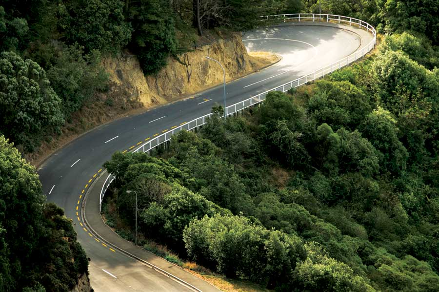

Planning For A Sustainable Human Future: Conservation, Population And Economy
Conservation alone is not a solution: We need to visualize success.
By Bryan Welch
April/May 2009
In July of 2007, I nearly killed myself. I didn’t do it intentionally, but I almost died from a terminal case of poor visualization. That’s right, poor visualization almost ended my life.
On a motorcycle, if you enter a turn with a gentle arc and that arc gradually becomes smaller, then you are in a decreasing-circumference curve - which presents a serious problem when you enter the corner too fast and then discover it closing down on you. It’s your classic rookie-motorcyclist error, and I made it.
There’s only one way out, and slowing down is not an option. To brake a motorcycle in a high-speed corner is disastrous. You’ll lose traction and lay the machine down on its side. So the experienced rider leans deeper into the irrational angle and holds his intent. He visualizes a successful outcome. He experiences the exhilaration of successfully testing his own courage and skill against the laws of nature.
I, on the other hand, lost my nerve. Rather than visualizing myself - and the motorcycle - completing that turn at that speed, I let fear take over. I couldn’t visualize it and, for lack of a clear mental picture, I became trapped in the curve. Instinctively, I tried to slow the motorcycle down. The motorcycle and I went sideways, bounced off a fortuitous guardrail, and I went down in the middle of the road at about 45 mph. It would be a year before I healed completely.
The Destination Fixation
As I considered the lessons I took from the experience - while massaging the deep bruises on my legs, arms and torso - it dawned on me that the human species is, in a manner of speaking, in the middle of a decreasing-circumference curve. Global climate change has created a worldwide sense that if we don’t do something soon, we may mess up our environment for the long term. We’re moving fast toward some form of environmental reckoning. The path we are on necessitates a change in attitude.
At the moment, we have our attention trained on conservation, effectively the middle of the curve. Instinctively, we want to slow down our personal consumption, but we are caught in the middle of a bunch of phenomena we don’t know how to interrupt.
We’re focusing our attention in the wrong place. Motorcyclists, mountain-bikers, skiers and steeplechasers all learn the same lesson: When you have a lot of forward momentum, you have to train your attention beyond the short-term challenges. You need to be thinking ahead. You need to form a picture of yourself successfully negotiating the coming obstacles.
If you focus on the intermediate obstacle, you’re likely to hit that obstacle. Your attention should be trained beyond obstacles. Athletes call it the “destination fixation.”
It’s recently occurred to me that I don’t hear anyone describing the world in which we want to live 20 years from now. Almost no one, it seems, is visualizing a successful outcome. We’re too busy arguing about where to drill for oil.
The Ultimate Riddle
As far as we know, there is only one species in the universe capable of conceptualizing its impact on its habitat. That’s us.
If we are defined by our capacity for objective thought, then we are now living in one of the definitive moments in human history. Our ability to conceptualize our own role in nature helps define us as human beings. Our capacity for creating solutions to complex problems is the primary factor in our success as a species.
Today we face the challenge of solving the definitive human riddle. We are aware that we have an impact on the environment. We are aware that our population has been growing exponentially. We are aware that no species can expand infinitely on this finite planet. With this awareness comes responsibility.
We are capable of moderating our impact on the planet. We are capable of conceptualizing a sustainable human habitat and executing a plan to create that habitat. Yes, we face complex problems. But we’ve solved complex problems before. Perhaps the more vexing puzzle is how to defeat our biological programming - the programming that, in the words of the Judeo-Christian Bible, tells us to “go forth and multiply.” It’s a good thing we enjoy solving puzzles.
A Terrific Time to be Human
Now is the moment when our uniquely objective perspective and our enterprising intellect are engaged in what may be the most important challenge faced by our species so far.
Other species have damaged their habitats or lost them to environmental disaster. The dinosaurs, the saber-toothed tiger and the woolly mammoth died out. Many species routinely go through periods of catastrophic population collapse and reestablish themselves in some new biological equilibrium. Lemmings spring to mind.
Nature has many tools at her disposal that allow her to control species that cause habitat damage. Famine and disease are her most potent weapons - both effective and unpleasant.
We, on the other hand, can conceptualize our effect on the environment and we might, if we wish to, avoid the suffering Nature will inflict.
And we could restore the astonishing garden into which we were born - the Earth. I can’t think of a more inspirational goal.
In one sense, it’s a terrific time to be human. We’re here to meet our biggest challenge so far - bigger than bipedal locomotion; bigger than the domestication of plants and animals; bigger than the invention of the wheel. We’re here to confront our own biology, the essential nature that tells us to keep reproducing and expanding. If you could view the entirety of human experience from the dawn of our evolution to the present, if you could pick the human century you’d like to witness firsthand, you might choose this one. I think I would. I would want to watch us tackle this problem.
Best Planet in the Universe
The suffering, if we don’t get it right, will not be humanity’s alone. Already we’ve destroyed thousands of species. In just the last few years, Europe’s Pyrenean ibex, Costa Rica’s golden toad, North America’s pearly mussel and the West African black rhinoceros have, so far as we can tell, passed into oblivion as humanity has destroyed their habitats. The scientists of the World Conservation Union estimate that 99 percent of recent extinctions and currently threatened species have been or will be destroyed by human activities. Conservation International reports that, as of the middle of 2008, a plant or animal species was becoming extinct every 20 minutes.
Extinction is normal, of course. The vast majority of species that ever lived seem to have disappeared somewhere along the line. What’s not normal is the rate of extinction. The rate has been accelerating since the beginning of the 20th century, and we’re responsible.
We’re taking a healthy, resilient and rich natural habitat - the only planet we know where life thrives - and degrading its ability to support life. New species can’t evolve fast enough to replace the diversity we’re destroying, even if we hadn’t made the habitat inhospitable. We’ve inherited the best planet in the known universe, only to squander it. And if we don’t change course soon, the planet could end up unfit for human habitation, or at the very least, damned uncomfortable.
The Limited Habitat
We could take this philosophically: A few decades or centuries after we disappear there will be a healthy planet here. Or we can see it fatalistically: The damage we are doing is part of a natural process. Our awareness doesn’t change that essential fact. We can even salve our guilty consciences by resorting to the geologic perspective: Eventually this planet will suffer some sterilizing galactic calamity. Scientists tell us our sun will, eventually, burn out.
But it’s not our nature to sit around complacently waiting for the asteroid, not while we have this miraculous opportunity to preserve and enhance our planet. Just as we once visualized the first irrigated field, invented the first wheel and dreamed of machines that fly, we can visualize the Earth as a beautiful and productive garden where millions of species thrive. Then we can build it.
Unfortunately, we are not visualizing the successful outcome - a healthy planet. Conservation has captured the human imagination lately and some great new inventions have come from this new fascination - the gas-electric hybrid engine, photovoltaic solar energy, wind-powered electric turbines, the hydrogen fuel cell. This is cool stuff. But it’s stopgap stuff.
The best product of our fascination with conservation is that it has captured our imaginations - the key component in a new human philosophy that values other living things. That’s a great thing.
On the other hand, short-term thinking distracts us from the underlying problem. At current rates of population growth, there will be 10 billion people on the planet in about 60 years. When there are 10 billion people on the planet, it won’t matter what they drive or if they’ve all committed to vegan diets. The planet will be under human assault in a battle in which everyone loses. We could hit that guardrail.
Someone’s going to object to my evidence. Maybe it will take 75 years to reach a population of 10 billion. Maybe the planet can accommodate 12 billion frugal human beings. But the rate of population growth is not the issue. Any growth at all creates the same ultimate dilemma. Sure, we might figure out ways to accommodate 10, 15 or 20 billion people in a crowded world. But why would we want to?
If ultimately we must control our population, then why not plan for a rich, healthy planet?
What if we decided, by mutual consensus, that a stable worldwide population of 4 billion people is our goal? Could we then live on a planet with clean air and water, plenty of food for everyone, and the environmental resilience necessary for us to prosper? Couldn’t we create a sustainable, healthy planet just because we decided to?
I think it’s time for us to start visualizing the future we desire. I’m not pretending it will be easy to get there.
Three Mountains
We have three tall mountains to climb. Conservation is, indeed, the first - if smallest - mountain. We need to forestall the effects of global warming as much as possible while we attempt to get our act together. We’re on the lower slopes of this mountain.
The next climb is longer and steeper. Population control is perfectly unavoidable. Eventually, we must stabilize human population or we’ll make a mess of our habitat and then nature will exert the control we abdicated. I’m not advocating anything Draconian, but if the international moral consensus were that each human being should reproduce himself or herself once - two children per couple - populations would slowly begin shrinking. It’s a simplistic solution, but the ultimate solutions are often the simplest.
I’m optimistic that we’ll reach both these goals. We already have the tools we need to reduce per-capita consumption and control our population. That leaves the third, and tallest, mountain.
As our economies are now structured, we depend on population growth to support economic growth. If demand for all goods and services were shrinking, values of all goods and services would also be declining in our current models. Imagine a world in which demand for all the fundamental human necessities - food, shelter, etc. - was shrinking every year. Imagine a world in which, let’s say, 5 percent of all houses on the market had no buyers because fewer people lived in your city. We’ve never seen this, and we probably don’t have the means of creating prosperity in a shrinking population. To sustain our population at lower, healthier levels, we’ll have to invent an economy that creates prosperity without growth. We will need brand new economic tools.
If we are to form the global consensus we will need to support these sea changes in human attitudes and culture, then we’ll have to visualize - as individuals and as a species - successful outcomes for all concerned. Otherwise, a lot of people won’t share in the consensus and we won’t be successful. We need new systems in which no one is placed at an unfair disadvantage. I’m not talking about socialism, communism or any other obsolete social system. We’re looking for something new that rewards human innovation without requiring human expansion. Simply put, our new economic systems will require unprecedented cooperation across cultural, social and political barriers.
I believe that we are at another turning point and that the vision we need today is, at its root, a spiritual vision. Because we’re the only species that perceives its impact on the habitat, we have a sacred responsibility to protect it for our own sake as well as the sake of the biological system as a whole. The gospels of monotheism - Christian, Jewish and Muslim - place this “responsibility” on us, sometimes translated as “dominion.” Gradually, we are accepting this responsibility. If we are to fulfill our duty, we’re going to need a new vision of the future.
And we’re going to need it soon.
I believe we can see these three mountains and their steep curves pretty clearly from here.
Publisher and Editorial Director Bryan Welch writes the Rancho Cappuccino blog.
|
 ISTOCKPHOTO If we focus on the intermediate obstacle, we’re likely to hit that obstacle. |
 MATTHEW T. STALLBAUMER To achieve a successful outcome, we must accept our sacred responsibility to protect the Earth. |
|